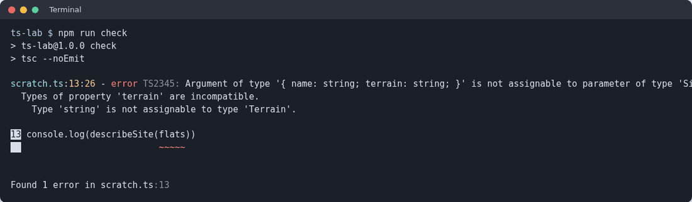

🧩 Lesson 2.2: Shaping Data
Every screen in Shoreline Crew HQ shows objects: a beach with a name and a terrain, a cleanup with a start time and a status, a volunteer who may or may not have left a phone number. Today you learn to describe those objects so precisely that TypeScript can tell a cleanup that is "cancelled" from one that is "canceled", knows a check-in code is only sometimes there, and refuses to let you read a phone number until you have handled the people who have none. By the end you will have drafted the crew's own data types, and you will be able to read the real API's contract like a map.
🎯 Learning Objectives
By the end of this lesson, you will be able to:
- Describe objects with object types and interfaces, including nested objects, and read the errors for missing, misspelled and extra properties
- Choose between
interfaceandtype, and build one shape on another withextendsor& - Mark properties optional (
?) or read-only (readonly) and say what each promise means for the code that uses them - Model "one of these" with unions and literal types, such as a cleanup's four statuses
- Narrow a union with
typeof, equality,inand a discriminant property, and check anunknownvalue that should be an object - Handle
nullandundefinedwith anif,??and?., and know when the!assertion is honest
📦 Code for this lesson
Starting code: lesson-04-start.zip · Finished code: lesson-04-end.zip. Each folder has a README with the commands to run it. The finished code adds ts-lab/shapes.ts; run npm ci in ts-lab before npm run check.
In This Lesson
📦 Describing an Object
Last lesson's types were single values: a number, a string, an array of numbers. Real data comes in objects, and the API sends nothing else: every site, cleanup and volunteer is an object with named properties. This lesson is about describing those objects. As in Lesson 2.1, you work in ts-lab: create scratch.ts again (you deleted it at the end of the last lesson), put each example in it, save, and run npm run check (and node scratch.ts when the example prints something). Open a terminal in ts-lab (cd ts-lab from your shoreline folder).
💡 Mental model: the sign-in sheet
At every cleanup, the crew hands out a sign-in sheet with printed columns: name, phone, shirt size. Nobody has to explain what goes where, and a sheet with a missing column or a scribbled extra one stands out at once. An object type is that printed sheet for your data: it names every column and what belongs in it, and TypeScript checks each object against it.
An object type
You can write the shape of an object right where you declare it, in curly braces: each property's name, a colon, its type, separated by semicolons (or commas, or line breaks):
const cove: { name: string; town: string; accessible: boolean } = {
name: 'Driftwood Cove',
town: 'Port Marisol',
accessible: false,
}
console.log(`${cove.name} is in ${cove.town}`)Expected output (node scratch.ts)
Driftwood Cove is in Port MarisolThe check is silent. That works, but nobody wants to repeat a long shape on every site. So you give it a name.
An interface
You met interface in Lesson 1.1: a named object type. Here is a site with two mistakes that are easy to make when you type objects by hand, a misspelled property and one the type does not list:
interface Site {
id: string
name: string
town: string
accessible: boolean
}
const cove: Site = {
id: 'driftwood-cove',
name: 'Driftwood Cove',
town: 'Port Marisol',
acessible: false,
}
const jetty: Site = {
id: 'north-jetty',
name: 'North Jetty',
town: 'Calder Bay',
accessible: false,
parking: 'Harbor lot B',
}Expected output (npm run check)
> ts-lab@1.0.0 check
> tsc --noEmit
scratch.ts:12:3 - error TS2561: Object literal may only specify known properties, but 'acessible' does not exist in type 'Site'. Did you mean to write 'accessible'?
12 acessible: false,
~~~~~~~~~
scratch.ts:20:3 - error TS2353: Object literal may only specify known properties, and 'parking' does not exist in type 'Site'.
20 parking: 'Harbor lot B',
~~~~~~~
Found 2 errors in the same file, starting at: scratch.ts:12Two related codes. TS2561 says the object has a property the type does not know, and because it looks like a typo of one it does know, TypeScript suggests the fix: accessible. TS2353 is the same complaint without a suggestion: Site has no parking. TypeScript reports extra properties on an object literal (an object written out in curly braces right where it is assigned) because there they are almost always a mistake, as here. The third kind of object error you already know from Lesson 1.1: leave a property out and you get TS2741, Property 'town' is missing. You will produce one in the project.
Fix both objects (spell accessible correctly, delete the parking line) and the check is silent again.
Objects inside objects
A property's type can be another object type. The API gives every site a picture with a URL and alt text, so image is an object of its own:
interface Site {
id: string
name: string
image: { url: string; alt: string }
}
const flats: Site = {
id: 'sandpiper-flats',
name: 'Sandpiper Flats',
image: {
url: '/images/sites/sandpiper-flats.jpg',
alt: 'A boardwalk crossing a green salt marsh at low tide.',
},
}
console.log(flats.image.alt)Expected output (node scratch.ts)
A boardwalk crossing a green salt marsh at low tide.Type flats.image. in VS Code and the suggestion list offers exactly alt and url. That is the everyday payoff of object types: the editor knows your data, so you stop guessing property names and checking the API's documentation for every one.
🤔 interface or type?
TypeScript has a second way to name a type: a type alias, written type Name = …. For an object shape, interface Site { … } and type Site = { … } describe the same thing and catch the same mistakes. The differences show up when you build on a shape or name something that is not an object:
interface CleanupEvent {
id: string
title: string
capacity: number
}
// interface: build a bigger shape on top of another with extends
interface CleanupEventDetail extends CleanupEvent {
siteName: string
}
// type: give a name to any type, including a union, and combine shapes with &
type EventStatus = 'draft' | 'scheduled' | 'completed' | 'cancelled'
type EventWithStatus = CleanupEvent & { status: EventStatus }
const weekend: CleanupEventDetail = {
id: 'e08',
title: 'Weekend Cove Cleanup',
capacity: 18,
siteName: 'Driftwood Cove',
}
const kayak: EventWithStatus = {
id: 'e15',
title: 'Harbor Kayak Cleanup',
capacity: 8,
status: 'draft',
}
console.log(`${weekend.title} at ${weekend.siteName}; ${kayak.title} is a ${kayak.status}`)Expected output (node scratch.ts)
Weekend Cove Cleanup at Driftwood Cove; Harbor Kayak Cleanup is a draftinterface CleanupEventDetail extends CleanupEvent: "everything aCleanupEventhas, plussiteName". The API describes its event detail exactly like this.type EventStatus = 'draft' | …: only a type alias can name a union (the next sections are all about unions). An interface always describes an object.CleanupEvent & { status: EventStatus }: the&(an intersection) means "both at once", so the result needs every property of both. It is how type aliases build on other shapes.
interface | type | |
|---|---|---|
| Describes an object shape | yes | yes |
| Names a union, a literal or a primitive | no | yes |
| Builds on another shape | extends | & |
| Can be reopened to add properties later | yes (two declarations with the same name merge) | no (a second type Site is an error) |
| In this course | object shapes | unions and everything else |
The last row is a convention, not a law, and it is the one the API's own type file follows. Teams argue about this choice far more than it deserves: both are fine, and the habit that matters is picking one rule and using it everywhere. "Reopening" (declaration merging) is mostly used to add to types from libraries; you will rarely write it yourself.
❔ Optional and Read-only Properties
Optional: ?
Some properties are only sometimes there. When an organizer opens a cleanup, the API includes the code volunteers type to check in on the day; when a volunteer opens the same cleanup, the code is left out. A ? after the name marks a property as optional:
interface CleanupEventDetail {
id: string
title: string
checkInCode?: string
}
const forVolunteers: CleanupEventDetail = { id: 'e17', title: 'Tide Pool Morning Cleanup' }
const forOrganizers: CleanupEventDetail = {
id: 'e17',
title: 'Tide Pool Morning Cleanup',
checkInCode: '4827',
}
console.log(forVolunteers.title)
console.log(forOrganizers.checkInCode.length)Expected output (npm run check)
> ts-lab@1.0.0 check
> tsc --noEmit
scratch.ts:15:13 - error TS18048: 'forOrganizers.checkInCode' is possibly 'undefined'.
15 console.log(forOrganizers.checkInCode.length)
~~~~~~~~~~~~~~~~~~~~~~~~~
Found 1 error in scratch.ts:15Both objects are valid CleanupEventDetails: one has the code and one does not. The error is on the last line, and it is worth reading closely. forOrganizers clearly has a code today, yet TS18048 says it is possibly undefined. TypeScript goes by the type, not today's value: an optional string is string | undefined everywhere you read it, because the next object might come from the API for a volunteer. You handle it like any other "maybe nothing" value, which is the last section of this lesson. (Run node scratch.ts anyway and it prints 4: running is not checking, and today's data happens to be fine.)
Read-only: readonly
readonly before a property says "set it when you create the object, never change it afterwards". It suits ids: a site's id is how everything else refers to it. Arrays have a read-only form too:
interface Site {
readonly id: string
name: string
}
const cove: Site = { id: 'driftwood-cove', name: 'Driftwood Cove' }
cove.name = 'Driftwood Cove Beach'
cove.id = 'cove'
const supplies: readonly string[] = ['Gloves', 'Bags', 'Grabbers']
supplies.push('Buckets')Expected output (npm run check)
> ts-lab@1.0.0 check
> tsc --noEmit
scratch.ts:8:6 - error TS2540: Cannot assign to 'id' because it is a read-only property.
8 cove.id = 'cove'
~~
scratch.ts:11:10 - error TS2339: Property 'push' does not exist on type 'readonly string[]'.
11 supplies.push('Buckets')
~~~~
Found 2 errors in the same file, starting at: scratch.ts:8Changing name is fine; changing id is TS2540. A readonly string[] has no push (or any other method that changes the array), hence the TS2339 "does not exist". Like every type, readonly disappears when the code runs: it is a check, not a lock. The API's type file does not use it, and you will not need it much in this course for a good reason: from Module 3 on, React asks you never to change data in place at all, but to make a new copy with the change.
🔀 Unions and Literal Types
In Lesson 2.1 you saw that const capacity = 18 has the literal type 18, a type with exactly one value. On its own that sounds useless. Combine several with |, read "or", and you get one of the most useful tools in TypeScript: a union, a type whose values may be any one of its members. In Lesson 1.1 you described a site's terrain as string, which accepts "sandy-ish" and every other typo. The crew uses exactly four words:
type Terrain = 'sand' | 'rocky' | 'marsh' | 'mixed'
interface Site {
name: string
terrain: Terrain
}
const flats: Site = { name: 'Sandpiper Flats', terrain: 'marsh' }
const pier: Site = { name: 'Seal Rock Pier', terrain: 'concrete' }Expected output (npm run check)
> ts-lab@1.0.0 check
> tsc --noEmit
scratch.ts:9:46 - error TS2322: Type '"concrete"' is not assignable to type 'Terrain'.
9 const pier: Site = { name: 'Seal Rock Pier', terrain: 'concrete' }
~~~~~~~
scratch.ts:5:3 - The expected type comes from property 'terrain' which is declared here on type 'Site'
5 terrain: Terrain
~~~~~~~
Found 1 error in scratch.ts:9The familiar TS2322, followed by a line that tells you where the expectation came from: the terrain property in Site. Type terrain: ' in VS Code and the suggestion list offers exactly the four words. A cleanup's status works the same way ('draft' | 'scheduled' | 'completed' | 'cancelled'), and when a value is close to a member, such as 'canceled', you get Lesson 1.1's TS2820 with a "Did you mean" instead.
💡 Mental model: the tick boxes on the sign-in sheet
"Shirt size: S / M / L / XL" with four boxes to tick is a union of literal types. A free-text "shirt size" line is string, and someone will write "medium-ish". The boxes make the wrong answer impossible to write down, and everyone reading the sheet knows the complete list of answers.
Unions of different types
Members do not have to be literals. A capacity typed into a form arrives as text, while the API sends a number, so a function that accepts both takes string | number. The catch: you may only use what every member has.
// A capacity typed into a form arrives as text; one from the API is a number
function capacityText(capacity: string | number) {
return capacity.toFixed(0)
}Expected output (npm run check)
> ts-lab@1.0.0 check
> tsc --noEmit
scratch.ts:3:19 - error TS2339: Property 'toFixed' does not exist on type 'string | number'.
Property 'toFixed' does not exist on type 'string'.
3 return capacity.toFixed(0)
~~~~~~~
Found 1 error in scratch.ts:3TS2339 with a second line explaining which member is the problem: numbers have toFixed, strings do not. To use it, you have to prove you have a number, which is the next section. You have also met a union already: string | null from getItem in Lesson 2.1 is a union of a type and null.
A trap: literal types inside objects
This one confuses everybody once. The object below looks like a perfectly good site:
type Terrain = 'sand' | 'rocky' | 'marsh' | 'mixed'
interface Site {
name: string
terrain: Terrain
}
function describeSite(site: Site) {
return `${site.name} (${site.terrain})`
}
const flats = { name: 'Sandpiper Flats', terrain: 'marsh' }
console.log(describeSite(flats))
terrain was inferred as string.Expected output (npm run check)
> ts-lab@1.0.0 check
> tsc --noEmit
scratch.ts:13:26 - error TS2345: Argument of type '{ name: string; terrain: string; }' is not assignable to parameter of type 'Site'.
Types of property 'terrain' are incompatible.
Type 'string' is not assignable to type 'Terrain'.
13 console.log(describeSite(flats))
~~~~~
Found 1 error in scratch.ts:13Read it from the bottom: the property terrain is a string, and a string is not a Terrain. Why a string, when the value is 'marsh'? Inference again: flats is a const, but its properties are not, so flats.terrain = 'anything' would be allowed later, and TypeScript infers the general type string for it, the way it did for let. The fix is to say what the object is when you create it: const flats: Site = { … }. Then 'marsh' is checked against Terrain right there, and the call is fine:
const flats: Site = { name: 'Sandpiper Flats', terrain: 'marsh' }
console.log(describeSite(flats))Expected output (node scratch.ts)
Sandpiper Flats (marsh)This is one more place to annotate, and it follows Lesson 2.1's rule of the edges: an object you build by hand to match a known shape is data entering your code, so name its type.
🔍 Narrowing: Proving Which One You Have
A union says "one of these". Before you use a member's special abilities, you prove which one you have, and TypeScript follows your proof: inside the if, the type is narrowed to the members that passed. You used typeof for this in Lesson 2.1. There are four everyday ways, and one of them will become the backbone of your React screens.
1. typeof, for primitives
// A capacity typed into a form arrives as text; one from the API is a number
function capacityText(capacity: string | number) {
if (typeof capacity === 'number') {
return capacity.toFixed(0)
}
return capacity.trim()
}
console.log(capacityText(18), capacityText(' 12 '))Expected output (node scratch.ts)
18 12Inside the if, capacity is a number. After it, TypeScript knows the number case has returned, so only string is left and trim is allowed. Hover over both uses of capacity to watch the type change.
2. Equality, for literal types
type EventStatus = 'draft' | 'scheduled' | 'completed' | 'cancelled'
function canSignUp(status: EventStatus) {
if (status === 'draft' || status === 'cancelled') {
return false
}
// here status is 'scheduled' | 'completed'
return status === 'scheduled'
}
console.log(canSignUp('scheduled'), canSignUp('cancelled'))Expected output (node scratch.ts)
true falseComparing with === narrows a union of literals: after the if returns, status can only be 'scheduled' or 'completed'. A switch on the value narrows the same way in each case; the project uses one.
3. A discriminant property, for unions of objects
A screen that loads cleanups is always in one of three situations: still loading, failed (with a message), or ready (with the events). Each situation has different data, so each is its own object type, and a shared property with a different literal in each one, here kind, tells them apart. This pattern is called a discriminated union, and the shared property the discriminant. Try to use the events without checking first:
type LoadState =
| { kind: 'loading' }
| { kind: 'failed'; message: string }
| { kind: 'ready'; events: string[] }
function report(state: LoadState) {
return `${state.events.length} cleanups loaded`
}Expected output (npm run check)
> ts-lab@1.0.0 check
> tsc --noEmit
scratch.ts:7:19 - error TS2339: Property 'events' does not exist on type 'LoadState'.
Property 'events' does not exist on type '{ kind: "loading"; }'.
7 return `${state.events.length} cleanups loaded`
~~~~~~
Found 1 error in scratch.ts:7A screen that is still loading has no events, and TypeScript says exactly that. Check kind first:
type LoadState =
| { kind: 'loading' }
| { kind: 'failed'; message: string }
| { kind: 'ready'; events: string[] }
function report(state: LoadState) {
if (state.kind === 'loading') {
return 'Loading cleanups...'
}
if (state.kind === 'failed') {
return `Could not load cleanups: ${state.message}`
}
return `${state.events.length} cleanups loaded`
}
console.log(report({ kind: 'failed', message: 'the API did not answer' }))
console.log(report({ kind: 'ready', events: ['Weekend Cove Cleanup', 'Family Beach Morning'] }))Expected output (node scratch.ts)
Could not load cleanups: the API did not answer
2 cleanups loaded
if (state.kind === 'failed'), hovering over state shows one member of the union, the one with message. VS Code shows the same pop-up.Each check removes a member, and by the last line only { kind: 'ready'; events: string[] } is left, so state.events is allowed without a third if. The win is bigger than it looks: it is impossible to show a list of events that never arrived, or an error message that does not exist. In Lesson 3.3 this exact pattern decides what a component draws, and in Lesson 5.1 it describes every change to a roster.
4. in, for objects without a discriminant
When two object types have no shared literal property, check for a property only one of them has. The API sends a plain event in lists and an event with its site when you open one:
interface CleanupEvent {
title: string
siteId: string
}
interface CleanupEventDetail extends CleanupEvent {
site: { name: string; town: string }
}
function where(event: CleanupEvent | CleanupEventDetail) {
if ('site' in event) {
return `${event.site.name}, ${event.site.town}`
}
return event.siteId
}
console.log(where({ title: 'Family Beach Morning', siteId: 'pelican-point' }))
console.log(where({
title: 'Weekend Cove Cleanup',
siteId: 'driftwood-cove',
site: { name: 'Driftwood Cove', town: 'Port Marisol' },
}))Expected output (node scratch.ts)
pelican-point
Driftwood Cove, Port MarisolChecking an unknown value that should be an object
Lesson 2.1 ended with a puzzle: typeof null is 'object'. Here it is in practice, with a site read from outside the program:
const saved: unknown = JSON.parse('{"name": "North Jetty", "town": "Calder Bay"}')
if (typeof saved === 'object') {
console.log(saved.name)
}Expected output (npm run check)
> ts-lab@1.0.0 check
> tsc --noEmit
scratch.ts:4:15 - error TS18047: 'saved' is possibly 'null'.
4 console.log(saved.name)
~~~~~
scratch.ts:4:21 - error TS2339: Property 'name' does not exist on type 'object'.
4 console.log(saved.name)
~~~~
Found 2 errors in the same file, starting at: scratch.ts:4Two errors from one line. typeof saved === 'object' lets null through (that old JavaScript quirk), hence TS18047. And knowing that something is an object says nothing about its properties: the type object has no name. So you check each thing you are about to use, in order:
const saved: unknown = JSON.parse('{"name": "North Jetty", "town": "Calder Bay"}')
if (
typeof saved === 'object' &&
saved !== null &&
'name' in saved &&
typeof saved.name === 'string'
) {
console.log(saved.name.toUpperCase())
} else {
console.log('That is not a site')
}Expected output (node scratch.ts)
NORTH JETTYEach condition narrows a little further: an object, not null, has a name, and that name is a string. TypeScript follows every step, so by the body, saved.name.toUpperCase() is allowed. Writing this for every property of a cleanup would be tiring; in Lesson 2.4 you wrap checks like these in one reusable function for the API's data, and in Module 8 a library writes them for you.
🕳️ Handling null and undefined
"Maybe nothing" is the union you will meet most: a volunteer's phone is string | null, an optional check-in code is string | undefined, and find returns undefined when nothing matches. In Lesson 1.2 the template answered one of these with !; in Lesson 2.1 you used an if. Here is the full toolkit.
interface Volunteer {
name: string
phone: string | null
}
const hannah: Volunteer = { name: 'Hannah Becker', phone: null }
const siteNames = ['Driftwood Cove', 'North Jetty', 'Long Strand Beach']
// 1. An if: the clearest way, and it works for any check
if (hannah.phone !== null) {
console.log(`Call ${hannah.phone}`)
} else {
console.log(`${hannah.name} has no phone on file`)
}
// 2. ?? gives a fallback when the value is null or undefined
console.log(hannah.phone ?? 'no phone on file')
// 3. ?. stops (and gives undefined) when the value before it is null or undefined
const pelican = siteNames.find((name) => name.startsWith('Pelican'))
console.log(pelican?.toUpperCase())
console.log(pelican?.toUpperCase() ?? 'No Pelican site in the list')Expected output (node scratch.ts)
Hannah Becker has no phone on file
no phone on file
undefined
No Pelican site in the list- An
if(!== null,!== undefined) is the clearest, and the right choice when the two cases need different code. ??, the nullish coalescing operator: "the value on the left, unless it isnullorundefined, then the one on the right". Perfect for a fallback text. The type ofhannah.phone ?? 'no phone on file'is plainstring.?., optional chaining: "if the value before me isnullorundefined, stop and giveundefined". That is why the third line printedundefinedinstead of crashing. Its result is still "maybe nothing", so it is usually followed by??, as in the last line.
Why ?? and not ||
Older JavaScript used || for fallbacks, and you will see it everywhere. It falls back on any falsy value, and 0 and '' are falsy too:
const spotsTaken: number = 0
const note: string = ''
console.log(spotsTaken || 'unknown', '|', spotsTaken ?? 'unknown')
console.log(note || 'no note', '|', note ?? 'no note')Expected output (node scratch.ts)
unknown | 0
no note |Zero spots taken is a real, important number (a brand-new cleanup), and || turned it into "unknown". TypeScript is happy with both, because both are valid JavaScript; this is a logic mistake, and the habit that prevents it is simple: for "missing", use ??. The same trap hides in if (event.spotsTaken), which skips zero. Compare with null or undefined when that is what you mean.
The ! assertion: a promise TypeScript cannot check
A ! after a value is the non-null assertion: "trust me, this is not null or undefined". TypeScript removes the "maybe nothing" from the type and checks nothing. When the promise is wrong:
const siteNames = ['Driftwood Cove', 'North Jetty', 'Long Strand Beach']
const pier = siteNames.find((name) => name === 'Seal Rock Pier')!
console.log(pier.toUpperCase())Expected output (npm run check, then node scratch.ts)
> ts-lab@1.0.0 check
> tsc --noEmit
file:///Users/you/shoreline/ts-lab/scratch.ts:4
console.log(pier.toUpperCase())
^
TypeError: Cannot read properties of undefined (reading 'toUpperCase')
at file:///Users/you/shoreline/ts-lab/scratch.ts:4:18
at ModuleJob.run (node:internal/modules/esm/module_job:561:25)
at async node:internal/modules/esm/loader:647:26
at async asyncRunEntryPointWithESMLoader (node:internal/modules/run_main:101:5)
Node.js v24.22.2The check is silent and the program crashes: the list has no Seal Rock Pier. So when is ! honest? When you control the thing it promises. Shoreline Crew HQ's main.tsx, from the Vite template, is the classic case:
createRoot(document.getElementById('root')!).render(The element with id root is in index.html, which is part of the same project; if it ever went missing, the app could not work at all and would fail on its very first line. That is a fair use. For anything from outside (the API, the browser's storage, a find over data), use an if, ?? or ?. instead.
| Tool | Reads as | Use it for |
|---|---|---|
if (x !== null) | "only when it is there" | different code for each case |
x ?? fallback | "x, or else the fallback" | a default value or text |
x?.y | "y, if x is there" | reaching into something that may be missing (then ??) |
x! | "I promise it is there" | only what your own project guarantees |
✅ "Possibly null" is good news
Every TS18047 and TS18048 is a crash that did not happen: a volunteer without a phone, a cleanup opened by someone who is not an organizer, a search with no match. These cases are real, and in plain JavaScript you find them when a user does. Handling them feels like extra work for a week or two. Then it becomes the way you think about data, and that way of thinking is a big part of what employers mean by "writes reliable code".
⚠️ Common Mistakes
⚠️ Building an object first and typing it later
const flats = { terrain: 'marsh' } infers terrain: string, and passing flats where a Site is expected gives the three-level TS2345 above. Annotate the object where you create it (const flats: Site = …), and mistakes are reported on the property that is wrong instead of at a call far away.
⚠️ Using || for "missing"
spotsTaken || 'unknown' hides a real zero, and note || 'no note' hides an empty note on purpose. Use ?? when you mean null or undefined, and compare explicitly (!== null) in conditions.
⚠️ Silencing "possibly undefined" with !
Adding ! makes TS18048 disappear and the crash stay, as the Seal Rock Pier example showed. The error asked "what if it is not there?"; ! answers "it always is" without checking. Answer the question with ?., ?? or an if.
⚠️ Checking typeof x === 'object' and forgetting null
typeof null is 'object'. Always pair the check with x !== null, as in the narrowing section; TypeScript reminds you with TS18047 if you forget.
⚠️ Copying an enum from an old tutorial
Older TypeScript code describes a fixed set of values with enum Status { Draft, Scheduled }. npm run check in ts-lab accepts it, but node refuses to run it, because an enum is not just a type that can be stripped away (it creates an object):
Expected output (node scratch.ts, trimmed)
file:///Users/you/shoreline/ts-lab/scratch.ts:1
> enum Status {
Draft,
Scheduled,
> }
SyntaxError [ERR_UNSUPPORTED_TYPESCRIPT_SYNTAX]: TypeScript enum is not supported in strip-only mode
...Shoreline Crew HQ's settings refuse it too (error TS1294: This syntax is not allowed when 'erasableSyntaxOnly' is enabled.). Use a union of literal types instead, like EventStatus: it does the same job, disappears completely when the code runs, and is what this course, the API and current React code use.
🛠️ Project: Draft the Crew's Data Shapes
You will write ts-lab/shapes.ts: your own first draft of the types Shoreline Crew HQ works with, some sample data, and small functions that handle every case those types allow. Then you break it four ways and finish by comparing your draft with the API's real contract. In Lesson 2.4 the app gets the real thing, and you will recognize every line.
Step 1: The types (12 min)
In ts-lab, create shapes.ts (keep scratch.ts for the exercises) and type the types:
// Shoreline Crew data shapes (Lesson 2.2): a first draft of the API's types
// Unions of literal types: exactly one of these words
type Terrain = 'sand' | 'rocky' | 'marsh' | 'mixed'
type EventStatus = 'draft' | 'scheduled' | 'completed' | 'cancelled'
interface Site {
id: string
name: string
town: string
terrain: Terrain
accessible: boolean
image: { url: string; alt: string; width: number; height: number }
}
interface CleanupEvent {
id: string
title: string
siteId: string
status: EventStatus
startTime: string
capacity: number
spotsTaken: number
}
// An event with its site, as the API sends one event; organizers also get the check-in code
interface CleanupEventDetail extends CleanupEvent {
site: Site
checkInCode?: string
}
interface Volunteer {
id: string
name: string
phone: string | null
}
// What a screen can be doing: each member has its own "kind"
type LoadState =
| { kind: 'loading' }
| { kind: 'failed'; message: string }
| { kind: 'ready'; events: CleanupEvent[] }Before you go on, say in your own words what each type promises. Which property may be missing? Which may be null? What is the difference for the code that reads them? (Optional means "possibly not there at all", read as undefined; string | null means "always there, possibly empty on purpose". The API uses both, as you will see in Step 5.)
Step 2: Sample data (10 min)
Add a site, two cleanups and two people from the crew, each annotated with its type where it is created:
// ...
const cove: Site = {
id: 'driftwood-cove',
name: 'Driftwood Cove',
town: 'Port Marisol',
terrain: 'mixed',
accessible: false,
image: {
url: '/images/sites/driftwood-cove.jpg',
alt: 'A small curved cove with pale sand and gray driftwood logs along the tide line.',
width: 1200,
height: 675,
},
}
const sites: Site[] = [cove]
const weekendCove: CleanupEventDetail = {
id: 'e08',
title: 'Weekend Cove Cleanup',
siteId: 'driftwood-cove',
status: 'scheduled',
startTime: '09:00',
capacity: 18,
spotsTaken: 18,
site: cove,
}
const kayakDraft: CleanupEvent = {
id: 'e15',
title: 'Harbor Kayak Cleanup',
siteId: 'north-jetty',
status: 'draft',
startTime: '09:00',
capacity: 8,
spotsTaken: 0,
}
const crew: Volunteer[] = [
{ id: 'v02', name: 'Luis Romero', phone: '(831) 555-0102' },
{ id: 'v03', name: 'Hannah Becker', phone: null },
]Notice that weekendCove is a CleanupEventDetail with a site and no checkInCode (this is what a volunteer would receive), while kayakDraft is a plain CleanupEvent. Run npm run check; it should be silent. If you get TS2561 or TS2353, compare the property names with your interfaces.
Step 3: Functions that handle every case (14 min)
Add the functions and the lines that use them:
// ...
function statusLabel(status: EventStatus) {
switch (status) {
case 'draft':
return 'Draft (organizers only)'
case 'scheduled':
return 'Scheduled'
case 'completed':
return 'Completed'
case 'cancelled':
return 'Cancelled'
}
}
function spotsLine(event: CleanupEvent) {
const left = event.capacity - event.spotsTaken
return left > 0 ? `${left} spots left` : 'Full: join the waiting list'
}
function siteName(siteId: string) {
return sites.find((site) => site.id === siteId)?.name ?? 'Unknown site'
}
function checkInLine(event: CleanupEventDetail) {
return `Check-in code: ${event.checkInCode ?? 'shown to organizers only'}`
}
function contactLine(person: Volunteer) {
if (person.phone === null) {
return `${person.name}: no phone on file`
}
return `${person.name}: ${person.phone}`
}
function report(state: LoadState) {
if (state.kind === 'loading') {
return 'Loading cleanups...'
}
if (state.kind === 'failed') {
return `Could not load cleanups: ${state.message}`
}
return `${state.events.length} cleanups loaded`
}
for (const event of [weekendCove, kayakDraft]) {
const where = siteName(event.siteId)
console.log(`${event.title} at ${where}: ${statusLabel(event.status)}, ${spotsLine(event)}`)
}
console.log(`${weekendCove.site.name} is ${weekendCove.site.terrain}; ${checkInLine(weekendCove)}`)
for (const person of crew) {
console.log(contactLine(person))
}
console.log(report({ kind: 'loading' }))
console.log(report({ kind: 'failed', message: 'the API did not answer' }))
console.log(report({ kind: 'ready', events: [weekendCove, kayakDraft] }))node shapes.ts
npm run checkExpected output (node shapes.ts)
Weekend Cove Cleanup at Driftwood Cove: Scheduled, Full: join the waiting list
Harbor Kayak Cleanup at Unknown site: Draft (organizers only), 8 spots left
Driftwood Cove is mixed; Check-in code: shown to organizers only
Luis Romero: (831) 555-0102
Hannah Becker: no phone on file
Loading cleanups...
Could not load cleanups: the API did not answer
2 cleanups loadednpm run check prints only its two > lines. Find each tool from this lesson in the functions: the switch narrows status; siteName uses ?. and ?? (the kayak cleanup's site is not in the list, so you see Unknown site, not a crash); checkInLine uses ?? on an optional property; contactLine uses an if on null; report narrows the discriminated union. In the loop, hover over event: it is CleanupEvent | CleanupEventDetail, and event.title is allowed because both members have a title.
Step 4: Break it four ways (10 min)
One change at a time: make it, run npm run check, read the whole message, undo it (Ctrl+Z, or ⌘ Cmd+Z on a Mac). For each, write down the code and the question TypeScript is asking.
- A word that is not on the list: in
cove, changeterrain: 'mixed'toterrain: 'beach'. - A missing property: in
kayakDraft, delete thetitleline. - A skipped check: in
report, delete the wholeif (state.kind === 'failed') { … }block. - A search that may find nothing: in
siteName, change?.nameto.name.
Expected output (1: a word that is not on the list)
> ts-lab@1.0.0 check
> tsc --noEmit
shapes.ts:48:3 - error TS2322: Type '"beach"' is not assignable to type 'Terrain'.
48 terrain: 'beach',
~~~~~~~
shapes.ts:11:3 - The expected type comes from property 'terrain' which is declared here on type 'Site'
11 terrain: Terrain
~~~~~~~
Found 1 error in shapes.ts:48Expected output (2: a missing property)
> ts-lab@1.0.0 check
> tsc --noEmit
shapes.ts:70:7 - error TS2741: Property 'title' is missing in type '{ id: string; siteId: string; status: "draft"; startTime: string; capacity: number; spotsTaken: number; }' but required in type 'CleanupEvent'.
70 const kayakDraft: CleanupEvent = {
~~~~~~~~~~
shapes.ts:18:3 - 'title' is declared here.
18 title: string
~~~~~
Found 1 error in shapes.ts:70Expected output (3: a skipped check)
> ts-lab@1.0.0 check
> tsc --noEmit
shapes.ts:122:19 - error TS2339: Property 'events' does not exist on type '{ kind: "failed"; message: string; } | { kind: "ready"; events: CleanupEvent[]; }'.
Property 'events' does not exist on type '{ kind: "failed"; message: string; }'.
122 return `${state.events.length} cleanups loaded`
~~~~~~
Found 1 error in shapes.ts:122Expected output (4: a search that may find nothing)
> ts-lab@1.0.0 check
> tsc --noEmit
shapes.ts:104:10 - error TS2532: Object is possibly 'undefined'.
104 return sites.find((site) => site.id === siteId).name ?? 'Unknown site'
~~~~~~~~~~~~~~~~~~~~~~~~~~~~~~~~~~~~~~~~
Found 1 error in shapes.ts:104Mistake 3 is worth a second look: with the failed check gone, two members are left when the last line runs, and the message names both, then the one without events. Mistake 4 is a new code for an old question: TS2532, "Object is possibly 'undefined'", is what TypeScript says when the maybe-missing thing is the result of a call rather than a named variable. Undo every change until npm run check is silent again.
Step 5: Read the real contract (5 min)
Open shoreline-api/core/types.ts in VS Code: the file the API and both of the crew's apps share. Find your four interfaces in it. Here are two of them:
/** A cleanup event with its site, as GET /api/events/:id returns it. */
export interface CleanupEventDetail extends CleanupEvent {
site: Site
/** only present for organizers: the code volunteers type to check in on the day */
checkInCode?: string
}
/** A person in the crew. Organizers are volunteers with extra permissions. */
export interface Volunteer {
id: string
name: string
email: string
phone: string | null
role: Role
skills: Skill[]
joinedOn: DateString
/** hours from attended cleanups */
hoursLogged: number
}Your CleanupEventDetail matches it, apart from the comments. The real Volunteer has more properties (an email, a role, skills), and some types you have not met: Skill[] is an array of another union, and DateString is a type alias for string that the file defines near the top to document the format. The /** … */ comments are shown by VS Code when you hover over a property, and export makes a type usable from other files (Lesson 2.4). Write down two differences between your draft and the real file; you will need neither list nor draft after Lesson 2.4, but reading a contract like this is a skill you use on every project.
Your own project: sketch the two or three main objects of the app you are planning for Lesson 11.1 as interfaces on paper. Mark one property that is optional, one that may be null, and one that should be a union of literal types instead of a string.
✅ Project Completion Checklist
- ☐
shapes.tshas theTerrainandEventStatusunions, theSite,CleanupEvent,CleanupEventDetailandVolunteerinterfaces, and theLoadStateunion - ☐
node shapes.tsprints the eight lines above, andnpm run checkreports no errors - ☐ I can point at a
switch, a discriminant check, anifonnull, a??and a?.in my functions and say what each one narrows - ☐ I produced TS2322, TS2741, TS2339 and TS2532 and wrote down the question each one asks
- ☐ I compared my draft with
shoreline-api/core/types.tsand noted two differences
🏋️ Hands-on Exercises
Exercises 1 and 2 are part of the lesson (about 15 minutes together, included in the lesson time). Use scratch.ts for each, and delete scratch.ts when you are done, so ts-lab keeps one file per lesson.
🏋️ Exercise 1: Type a sign-up
When a volunteer signs up for a cleanup, the API stores a sign-up. Here is one, with a single property left out (the real one also has createdAt):
{
"id": "s101",
"eventId": "e17",
"volunteerId": "v04",
"status": "attended",
"note": "Bringing my own gloves",
"checkedInAt": "2026-03-14T15:05:00.000Z"
}A sign-up's status is one of confirmed, waitlisted, cancelled, attended or no-show, and checkedInAt is null until the volunteer checks in. Write a SignupStatus type and a Signup interface, then a function checkInLine(signup: Signup) that returns v04: checked in at 15:05 UTC or v11: not checked in yet (confirmed). Test it with this sign-up and one that has not checked in.
💡 Hint
checkedInAt is always present, so it is not optional: its type is string | null. Check for null first. The time is characters 11 to 15 of the timestamp: slice(11, 16).
✅ Solution
type SignupStatus = 'confirmed' | 'waitlisted' | 'cancelled' | 'attended' | 'no-show'
interface Signup {
id: string
eventId: string
volunteerId: string
status: SignupStatus
note: string
checkedInAt: string | null
}
function checkInLine(signup: Signup) {
if (signup.checkedInAt === null) {
return `${signup.volunteerId}: not checked in yet (${signup.status})`
}
return `${signup.volunteerId}: checked in at ${signup.checkedInAt.slice(11, 16)} UTC`
}
const signups: Signup[] = [
{
id: 's101',
eventId: 'e17',
volunteerId: 'v04',
status: 'attended',
note: 'Bringing my own gloves',
checkedInAt: '2026-03-14T15:05:00.000Z',
},
{
id: 's102',
eventId: 'e17',
volunteerId: 'v11',
status: 'confirmed',
note: '',
checkedInAt: null,
},
]
for (const signup of signups) {
console.log(checkInLine(signup))
}Expected output (node scratch.ts)
v04: checked in at 15:05 UTC
v11: not checked in yet (confirmed)Compare yours with Signup in shoreline-api/core/types.ts: it is the same shape, with the API's Timestamp alias instead of string for the two times (it also has createdAt).
🏋️ Exercise 2: Three questions in one file
Put this in scratch.ts and run npm run check. Answer each of the three errors in code, without any, ! or changing the types, until the check is silent and node scratch.ts prints a line.
type EventStatus = 'draft' | 'scheduled' | 'completed' | 'cancelled'
interface CleanupEventDetail {
title: string
status: EventStatus
checkInCode?: string
}
type LoadState =
| { kind: 'loading' }
| { kind: 'failed'; message: string }
| { kind: 'ready'; event: CleanupEventDetail }
const creek: CleanupEventDetail = { title: 'Creek Mouth After the Rains', status: 'canceled' }
function codeLength(event: CleanupEventDetail) {
return event.checkInCode.length
}
function errorText(state: LoadState) {
return `Sorry: ${state.message}`
}
console.log(creek.title, codeLength(creek), errorText({ kind: 'loading' }))💡 Hint
One is a spelling the union does not allow (read the "Did you mean"). One is an optional property: what should the length be when there is no code? One reads message, which only one member of LoadState has: check kind first and return something else otherwise.
✅ Solution
Expected output (npm run check, before the fixes)
> ts-lab@1.0.0 check
> tsc --noEmit
scratch.ts:14:75 - error TS2820: Type '"canceled"' is not assignable to type 'EventStatus'. Did you mean '"cancelled"'?
14 const creek: CleanupEventDetail = { title: 'Creek Mouth After the Rains', status: 'canceled' }
~~~~~~
scratch.ts:5:3 - The expected type comes from property 'status' which is declared here on type 'CleanupEventDetail'
5 status: EventStatus
~~~~~~
scratch.ts:17:10 - error TS18048: 'event.checkInCode' is possibly 'undefined'.
17 return event.checkInCode.length
~~~~~~~~~~~~~~~~~
scratch.ts:21:26 - error TS2339: Property 'message' does not exist on type 'LoadState'.
Property 'message' does not exist on type '{ kind: "loading"; }'.
21 return `Sorry: ${state.message}`
~~~~~~~
Found 3 errors in the same file, starting at: scratch.ts:14type EventStatus = 'draft' | 'scheduled' | 'completed' | 'cancelled'
interface CleanupEventDetail {
title: string
status: EventStatus
checkInCode?: string
}
type LoadState =
| { kind: 'loading' }
| { kind: 'failed'; message: string }
| { kind: 'ready'; event: CleanupEventDetail }
const creek: CleanupEventDetail = { title: 'Creek Mouth After the Rains', status: 'cancelled' }
function codeLength(event: CleanupEventDetail) {
return event.checkInCode?.length ?? 0
}
function errorText(state: LoadState) {
if (state.kind === 'failed') {
return `Sorry: ${state.message}`
}
return 'No error'
}
console.log(creek.title, codeLength(creek), errorText({ kind: 'loading' }))Expected output (node scratch.ts)
Creek Mouth After the Rains 0 No errorThree answers to three questions: the status is spelled the crew's way; no code means length 0 (?. stops at the missing code and ?? supplies the 0); and the error text exists only after checking that the state failed. If you ran the broken file with node first, it crashed on the check-in code: the second question was a real bug.
🏋️ Exercise 3: A site name from outside (Stretch)
Optional stretch, not counted in the lesson time (about 15 minutes).
Write siteNameFrom(value: unknown) that returns the value's name if the value is an object with a non-empty string name, and Unknown site otherwise. Test it with JSON.parse of {"id": "north-jetty", "name": "North Jetty"}, {"name": 42}, {"name": " "}, null and "North Jetty" (a string, not an object).
💡 Hint
Start from the object check in the narrowing section and add one more condition: value.name.trim() !== ''.
✅ Solution
function siteNameFrom(value: unknown) {
if (
typeof value === 'object' &&
value !== null &&
'name' in value &&
typeof value.name === 'string' &&
value.name.trim() !== ''
) {
return value.name
}
return 'Unknown site'
}
console.log(siteNameFrom(JSON.parse('{"id": "north-jetty", "name": "North Jetty"}')))
console.log(siteNameFrom(JSON.parse('{"name": 42}')))
console.log(siteNameFrom(JSON.parse('{"name": " "}')))
console.log(siteNameFrom(JSON.parse('null')))
console.log(siteNameFrom(JSON.parse('"North Jetty"')))Expected output (node scratch.ts)
North Jetty
Unknown site
Unknown site
Unknown site
Unknown siteOnly the first value passes all five conditions. This function is a small version of what Lesson 2.4 builds for every cleanup the API sends: outside data is unknown until each property you rely on has been checked.
🎯 Quick Quiz
🎯 Check Your Understanding
Question 1: Which declaration lets a site's terrain be exactly one of the crew's four words, and nothing else?
Question 2: CleanupEventDetail has checkInCode?: string. What does npm run check say about return event.checkInCode.length?
Question 3: const flats = { name: 'Sandpiper Flats', terrain: 'marsh' }, then describeSite(flats) gives TS2345 ending in "Type 'string' is not assignable to type 'Terrain'". Why, and what is the usual fix?
Question 4: With type LoadState = { kind: 'loading' } | { kind: 'failed'; message: string } | { kind: 'ready'; events: CleanupEvent[] }, where may you read state.message?
Question 5: A new cleanup has spotsTaken set to 0. What does console.log(spotsTaken || 'unknown') print?
❓ Common Questions at This Stage
Should I write semicolons or commas between properties?
Either works, and so does a plain line break, which is what this course and the API use for multi-line interfaces. On one line, separate properties with semicolons, as in { url: string; alt: string }; that is what TypeScript prints in its own messages. Code formatters such as Prettier pick one style for you.
What is the difference between phone?: string and phone: string | null?
phone?: string means the property may be absent from the object altogether (reading it gives undefined). phone: string | null means the property is always there, and null says "deliberately empty". APIs often use null for "we know there is none" and leave optional properties out when they do not apply to you, which is exactly how the crew's API treats a phone number and a check-in code. ?? and ?. handle both.
Do types like these check the data the API actually sends?
No, and this is the most important limit to remember. Types disappear when the code runs, so writing const site: Site = await response.json() would be a claim, not a check: if the API sent something else, nothing would notice. That is why data from outside starts as unknown and gets checked, as in the narrowing section. Lesson 2.4 does this for the API's data, and Module 8 hands the job to Zod.
Why does the course use unions of strings instead of enums?
Unions of literal types disappear when the code runs, so Node and Vite can strip them, and the values are the same plain strings the API sends in its JSON. Enums create a runtime object, which Node's type stripping and the app's erasableSyntaxOnly setting refuse (see Common Mistakes). You will still meet enums in older code; read them as "a named list of values".
🌟 Going Further: Bonus Challenge
In shapes.ts, delete the case 'cancelled' lines from statusLabel and hover over the function name: the return type is now the three labels or undefined. TypeScript noticed that one status falls through the switch without returning. Run npm run check: no error, because nothing yet requires a string. How would you make TypeScript insist that every status is handled? Write your guess in your notes (Lesson 3.3 shows a way with a lookup table, and Lesson 5.1 the classic one with a type called never), then put the lines back.
📓 Learning Journal
Take five to ten minutes and jot down:
- Key concepts you learned today
- Techniques that clicked (and the ones that have not, yet)
- Questions or confusion to look up or bring to the next session
- Ideas to try on your own
- Progress and feelings: how did this lesson go for you?
✍️ This lesson's prompt: Think of a bug you have seen in a website or app (a blank screen, "undefined" printed on a page, a list that never loaded). Which tool from today would have caught it: a union of literal types, an optional property, a discriminated union, or ?? instead of ||? Describe the bug and the type you would write to prevent it in two or three sentences.
📝 Lesson Summary
🎓 Key Takeaways
- An object type lists each property and its type; an
interfacenames one. Object literals are checked for missing (TS2741), misspelled (TS2561) and extra (TS2353) properties - Use
interfacefor object shapes andtypefor unions and everything else; build on shapes withextendsor& ?makes a property optional (it reads asT | undefined);readonlyforbids changing it after creation- A union (
A | B) is "one of these"; unions of literal types describe fixed lists like the four statuses. Annotate objects where you create them, or their properties widen tostring - Narrowing proves which member you have:
typeof,===/switch, a discriminant property,in, and the object checktypeof x === 'object' && x !== null && 'name' in x - For "maybe nothing": an
if,??(not||),?.;!only for what your own project guarantees
| If you want to… | Go to |
|---|---|
| Look up a type or pattern quickly | TypeScript Cheat Sheet |
| See every type the API uses | The Shoreline Crew API |
| Read the official chapter on narrowing | TypeScript Handbook: Narrowing |
| Look up a new word | Glossary |
🏆 What You've Accomplished
- You drafted Shoreline Crew's data types (sites, cleanups, volunteers and a loading state) and wrote functions that handle every case they allow
- You can choose between
interfaceandtype, and use optional, read-only and nested properties - You replaced free-text strings with unions of literal types and found the "widened literal" trap
- You narrowed unions four ways and checked an
unknownobject safely,nullquirk included - You handled "maybe nothing" with
if,??and?., and saw exactly when!lies - You read the API's real contract and recognized its shapes
🔭 Looking Ahead
In Lesson 2.3: Functions and Generics you type functions properly: parameters with defaults, return types for functions other files rely on, function types like (event: CleanupEvent) => string, and generics, the angle brackets in Array<string>. You will write one function that works for a list of sites, cleanups or anything else, without giving up a single check.
📋 Before the Next Lesson
- Make sure
node shapes.tsprints its eight lines andnpm run checkints-labreports no errors - Delete
scratch.ts(Lesson 2.3 addsfunctions.ts) - Keep your notes from Step 4 and Step 5: four error codes, their questions, and two differences from the real contract
🌱 Encouragement for the Journey
Today was dense: six new ideas, each with its own syntax and its own error messages. If narrowing or ?? versus || still feels slippery, that is normal; they settle as you use them, and you will use them in almost every lesson from here on. Notice what changed, though: TypeScript's messages are starting to read like sentences you understand. Last week they were noise. That is real progress, and it is yours.